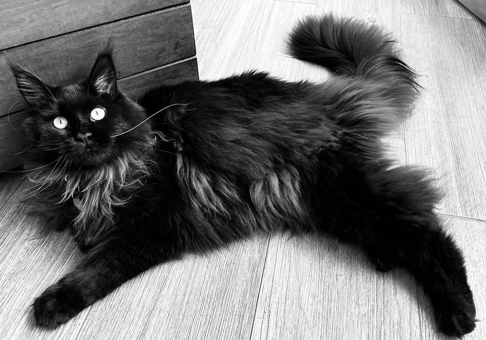

Mi gatito Maine coon

marineros en 1850. Aquellos gatos se aparearon con los gatos locales de pelo corto. Los descendientes fueron unos gatos grandes y de constitución fuerte, con pelajes semilargos y colas en forma de cepillo que recordaban a las de los mapaches (racoon, en inglés); de ahí el nombre de maine coon.
El Maine Coon, un gato de temperamento dulce, se adapta fácilmente a cualquier entorno. Tiene un pelo denso aunque sedoso. Se considera al Maine Coon la única raza de gato de pelo largo originaria de los Estados Unidos.
Los maine coon son muy amigables y sociables. En caso de ser el único gato de la casa, este requiere mucha atención humana. Además, es una raza muy charlatana, es decir, sus arrullos y maullidos te acompañarán durante todo el día. Son muy afables y tolerantes con otros animales y con los niños.
| 13 |
Maine coon |
Negro |
Simpatico |
Pienso |
- Correr
- Saltar
- Andar
- Trepar
- Maullar